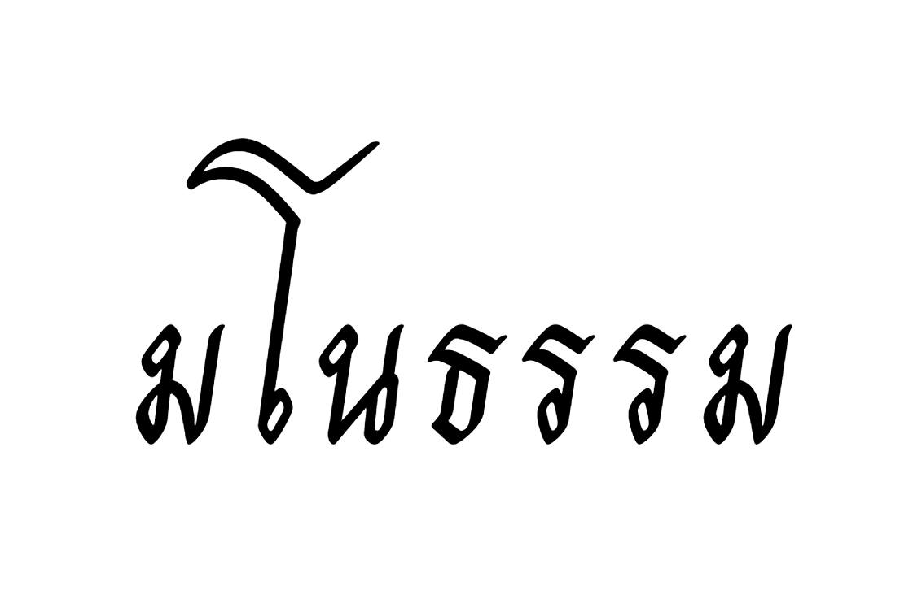

มโนธรรมคือสิ่งสุดท้ายที่เตือนเราให้หยุดก่อนตกเหวของกิเลส แม้ชั่วดีจะรู้หมด แต่อดใจไม่ไหวก็ยังเกิดขึ้นได้เสมอ
{kind=link}

บทความนี้เริ่มจากคติประจำตัวที่แรงและจริงมากว่า “ชั่วดีรู้หมด อดใจไม่ไหว” ผู้เขียนใช้ประโยคนี้ไม่ใช่เพื่อประชดชีวิต แต่เพื่อเตือนสติตัวเองว่ามนุษย์จำนวนมากไม่ได้ทำผิดเพราะไม่รู้ผิดชอบ หากทำผิดเพราะในจังหวะที่อ่อนแรง กิเลสและตัณหาผลักให้ตัดสินใจสวนทางกับสิ่งที่ใจรู้อยู่แล้ว
ความสำคัญของโพสต์นี้อยู่ที่การไม่วางตัวเองเป็นคนบริสุทธิ์ ผู้เขียนยอมรับตรง ๆ ว่าตนเองก็ยังมีโลภ โกรธ หลงอยู่เสมอ เพียงแต่พยายามสะกดมันไว้ในระดับหนึ่ง ทำให้บทความนี้ไม่ใช่การเทศนาคนอื่นจากที่สูง แต่เป็นการพูดเรื่องคุณธรรมจากสนามจริงของชีวิต
จุดเด่นของบทความนี้คือการเลื่อนคำถามเรื่องศีลธรรมจากระดับความรู้ไปสู่ระดับความสามารถในการหยุดตัวเอง ผู้เขียนชี้ชัดว่า ความเลวร้ายมักเข้ามาในเวลาที่ร่างกายและจิตใจไม่พร้อม นั่นทำให้ปัญหาไม่ใช่เพียงเรารู้หรือไม่รู้ว่าอะไรถูกผิด แต่คือในนาทีที่แรงผลักของกิเลสแรงกว่าเสียงของมโนธรรม เราจะหยุดตัวเองได้หรือไม่
คนมักพลาดในเรื่องที่ใจรู้อยู่แล้วว่าไม่ควรทำ
ส่วนที่คมที่สุดของโพสต์คือการยอมรับว่าชีวิตคนเราจะตกต่ำก็มักเพราะก้าวต่อไปในเรื่องที่กิเลส ตัณหา และ “ลิ่วล้อ” บอกให้ทำ ทั้งที่ใจรู้ดีอยู่แล้วว่าไม่ควรกระทำ ประโยคนี้หนักมากเพราะมันตัดข้ออ้างเรื่องความไม่รู้ทิ้งไป แล้วชี้ให้เห็นโศกนาฏกรรมแบบมนุษย์จริง ๆ ว่าเรามักพลาดเพราะ อ่อนแรงต่อสิ่งที่รู้ว่าไม่ควร
นั่นทำให้มโนธรรมในที่นี้ไม่ใช่แค่ความรู้สึกผิดหลังเหตุการณ์ แต่เป็นกลไกที่ต้องเข้มแข็งพอจะทำงานก่อนการตัดสินใจจะหลุดมือ
มโนธรรมที่เข้มแข็งไม่ใช่การไม่เคยมีกิเลส แต่คือการกล้าหยุดทัน
ผู้เขียนไม่ได้บอกว่าคนดีคือคนที่ไม่มีโลภ โกรธ หลง ตรงกันข้าม เขายอมรับชัดว่ากิเลสเหล่านี้มีอยู่เสมอ สิ่งที่แยกคนที่รอดออกจากคนที่ตกต่ำจึงไม่ใช่ความบริสุทธิ์สมบูรณ์แบบ แต่คือความสามารถในการฟังเสียงมโนธรรมให้ทัน และยับยั้งตัวเองก่อนที่จะไหลลงไปตามแรงนั้น
ในแง่นี้ มโนธรรมจึงไม่ใช่คุณสมบัติอ่อนโยนแบบนามธรรม แต่เป็น พลังของการหยุด ซึ่งต้องแข็งแรงมากกว่าที่คนส่วนใหญ่มักคิด
เกียรติภูมิของคนไม่ได้อยู่ที่ไม่เคยถูกทดสอบ แต่อยู่ที่การรื้อฟื้นตัวเองได้ก่อนตกเหว
ข้อสรุปที่งดงามที่สุดของโพสต์คือ คนที่มโนธรรมเข้มแข็งที่สุดคือคนที่กล้าหยุดสิ่งที่กำลังจะทำผิดได้ และรื้อฟื้นคุณธรรมกับเกียรติภูมิของตน แม้เพียงก้าวเดียวก่อนตกเหวของกิเลสและความหลง ประโยคนี้ทำให้เกียรติไม่ได้ผูกกับภาพลักษณ์ว่าต้องไม่เคยสั่นคลอนเลย แต่ผูกกับการกลับตัวได้ทันในนาทีสำคัญ
ดังนั้น บทความนี้จึงเป็นทั้งคำเตือนและคำให้กำลังใจในเวลาเดียวกัน ว่ามนุษย์อาจไม่พ้นการถูกทดสอบ แต่ยังมีสิ่งหนึ่งที่รักษาไว้ได้เสมอ นั่นคือความสามารถในการหยุดและเลือกใหม่ก่อนจะสายเกินไป